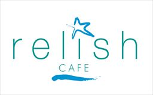
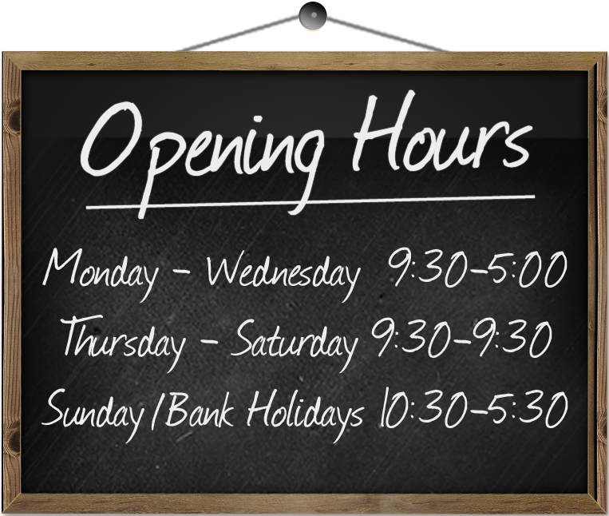
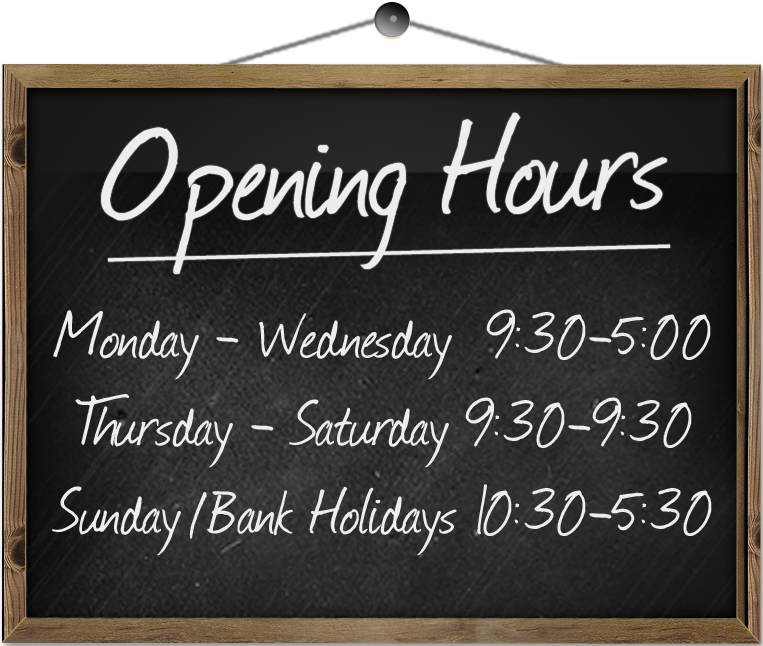

Relish Cafe

Coast Road, Bettystown, Co.Meath
Tel: (041) 9813344
At Relish Cafe, our aim is to focus on a vibrant local community & produce uncomplicated foods using local suppliers and seasonal ingredients.
Bettystown Cafe

Coast Road, Bettystown, Co.Meath
Tel: (041) 9813344
At Relish Cafe, our aim is to focus on a vibrant local community & produce uncomplicated foods using local suppliers and seasonal ingredients.
Bettystown Cafe
